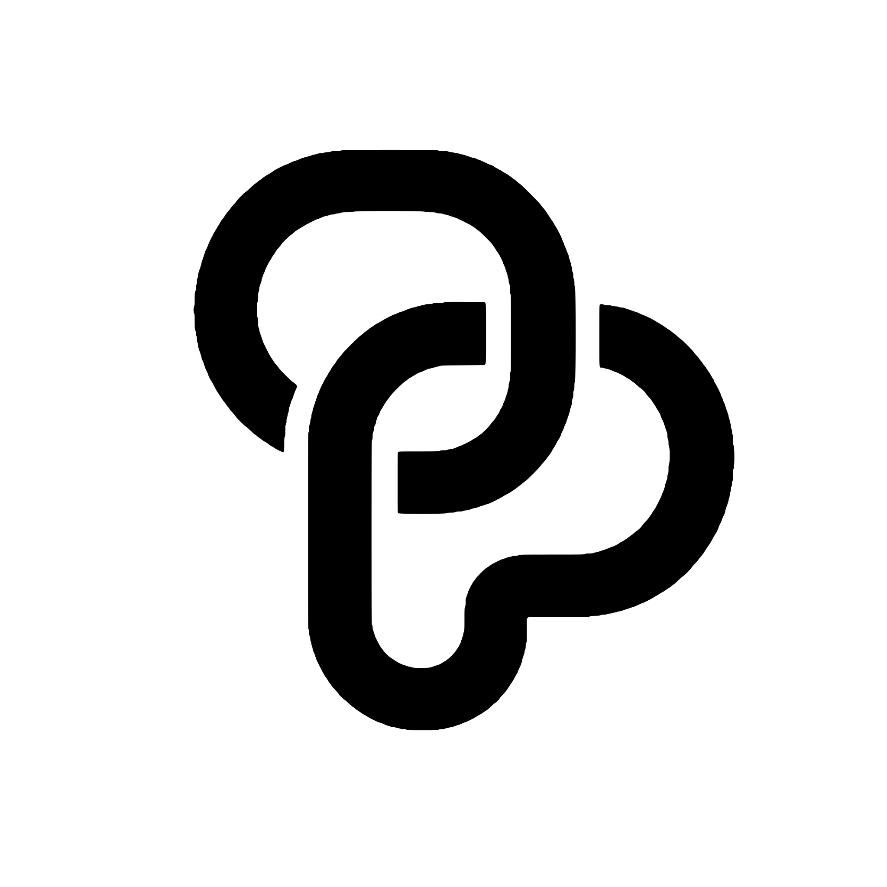

PotKitTokenise an unpaid invoice into backed, tradeable shares on Portaldot V3, and pay every holder pro-rata, on-chain, when the debtor settles.
app.potkit.pro · github.com/itsjusttu/potkit-portaldot
Tu · Builder, PotKit (solo)
The problem
often have to wait to get paid after they deliver the work.
Opaque, manual, and not built for small invoices.
No simple way to fund a slice of a receivable and be paid out automatically.
The solution
The issuer records the invoice as an NFT receipt.
Terms are fixed and a fixed supply of shares is issued.
Shares are sold for tPOT on an escrow market.
The debtor pays at least the face value, in tPOT.
Every holder gets a pro-rata payout.
The paid receipt returns to the issuer.
Payments use native tPOT: no stablecoin and no token approvals. Every step is a public transaction.
It works
| Step | Block | |
|---|---|---|
| Mint receipt #1 | ✓ | 97600 |
| Lock, set terms, issue 100 shares | ✓ | 97632 |
| List 90 shares at 0.009 tPOT | ✓ | 97654 |
| Buy 90 shares for 0.81 tPOT | ✓ | 97684 |
| Debtor settles: pays 1 tPOT | ✓ | 97706 |
| Investor claims 0.9 tPOT | ✓ | 97713 |
| Issuer claims 0.1 tPOT | ✓ | 97719 |
| Redeem the paid receipt NFT | ✓ | 97722 |
Contract
0x3c26…0fb7
Deployed 2026-10-19, block 97421. All 8 transactions succeeded.
Checkable: block links and hashes are in the README (Testnet evidence).
Why Portaldot
| First design 4 contracts | PotKit 1 contract | |
|---|---|---|
| Deploy | 1,386 | 327 |
| Full demo | ~87 | ~47 |
tPOT. Testnet estimates from eth_estimateGas (scripts/measure.mjs), not mainnet cost.
Architecture
React + viem, running in the browser. Reads and writes straight to the chain.
PotKit: one hand-written Yul contract (3.9 KB). Receipts, vault, settlement and market in one place.
Read logic that runs inside eth_call. Never deployed, so it costs no storage deposit.
tokenURI JSON for receipts, and an optional faucet (closed for now).
Safety and honesty
What the product does about it: limits shown next to every action, a public Verify page, an optional off-chain debtor acknowledgement (a signature, not proof of identity), and an issuer payment record from on-chain events.
Traction, stated honestly
Read from the kit's event logs on 2026-10-30. Testnet only. No customers, revenue or partners are claimed. Live app: app.potkit.pro. Open source (MIT).
A plan, not shipped
Freelancers and small businesses with unpaid invoices, as issuers. Minting is permissioned, so they are approved one by one.
None today: no fee in the contract, and PotKit is open source. Near term: ecosystem support after the hackathon.
The Portaldot community. A tester sends an address, the issuer approves it, and the testnet transactions are the evidence.
Portaldot V3's new EVM path, and a design built around its storage deposit: deploy ~327 tPOT against 1,386.
Roadmap and ask
Links
app.potkit.pro
potkit.pro
github.com/itsjusttu/potkit-portaldot
app.potkit.pro/?kit=0x3c26…0fb7
0x3c26351ad8b9dc7bb4f837c5b921879c35e20fb7
Tu · Builder, PotKit (solo)